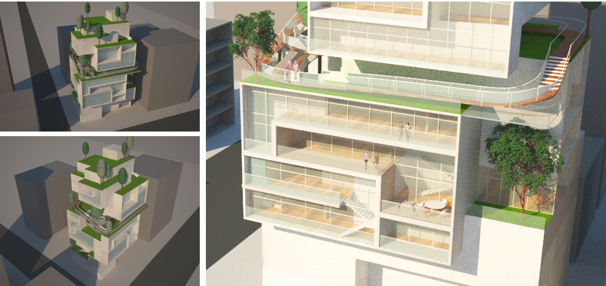
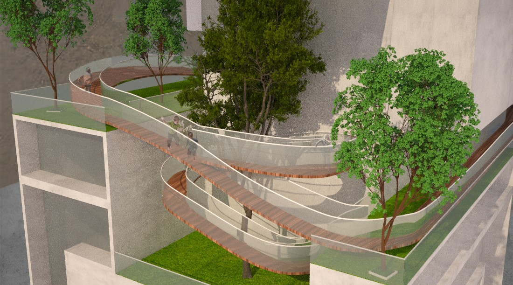
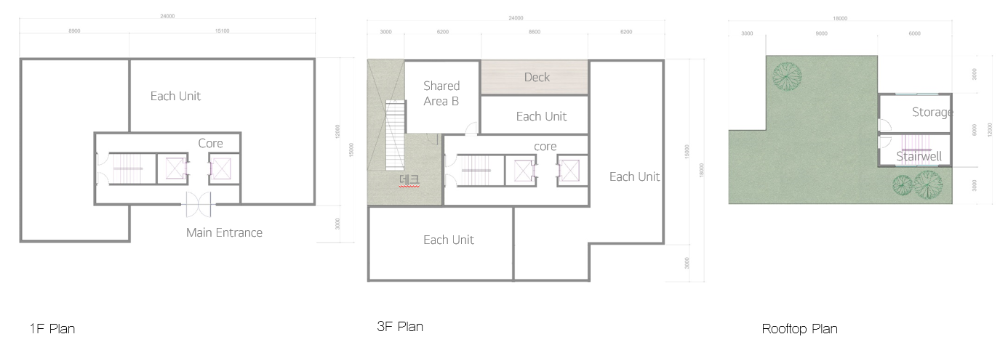
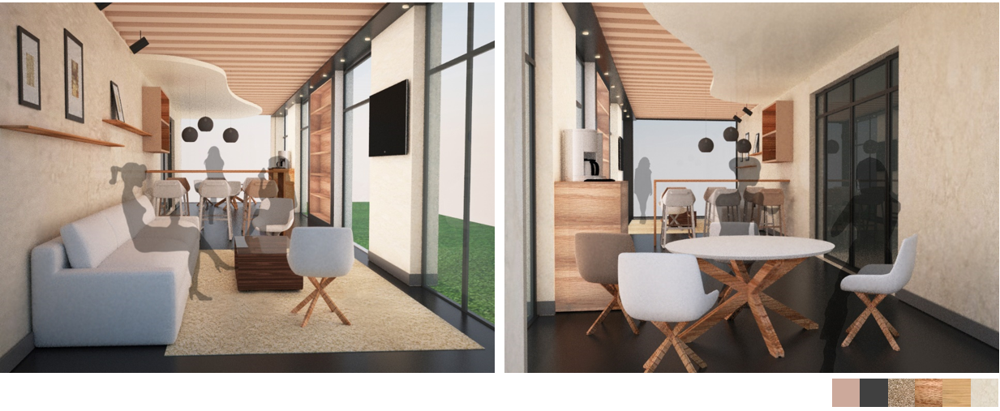
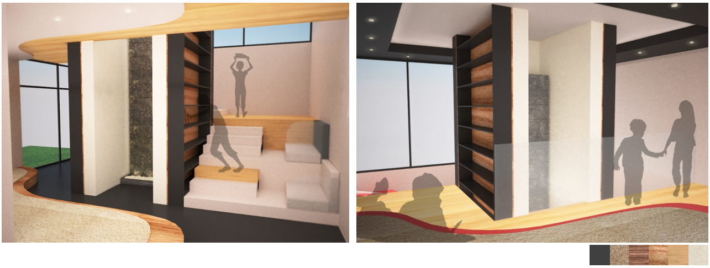

Be with Us
This project addresses the pressing issue of excessive floor noise in Korea by creating green spaces throughout apartment complexes. These spaces aim to provide children with opportunities for free play, interaction, and social development amidst societal challenges of restricted play areas in high-density living structures.
The design fosters community engagement while ensuring a harmonious living environment for residents, balancing recreational needs with noise mitigation strategies.
Impact: By reimagining shared spaces, the project enhances quality of life and community bonding within urban apartment complexes.
This was an individual project where I managed every aspect of the design process, from concept development to creating final deliverables. My responsibilities included:
Residents of apartment complexes, especially families with children
6 months
Green spaces with noise-reducing features and community-centric layouts
Residents often struggle with excessive floor noise, leading to frequent conflicts among neighbors.
💡 Solution: The design incorporates soft landscaping and sound-absorbing materials to minimize noise.
Children lack safe spaces for outdoor activities in apartment complexes, impacting their development.
💡 Solution: Green spaces with age-appropriate play zones and safety features encourage free play.
Residents expressed a desire for shared spaces that promote interaction and build stronger relationships.
💡 Solution: Shared areas like playgrounds, gardens, and seating zones encourage communication and collaboration.
This project reimagines urban apartment complexes to foster social connections and provide safe, engaging spaces for children. By introducing natural elements and community-oriented designs, it seeks to balance recreational needs and noise reduction, ultimately enhancing the quality of life for all residents.
Key ideas include creating playgrounds, multi-purpose rooms, libraries, and playrooms with integrated green elements to promote interaction and relaxation in a dense urban environment.
Using modular box units (3m x 3m x 3m), the building structure is designed to maximize community areas while preserving architectural aesthetics. Each unit represents 33-40 square meters of living space, with shared spaces seamlessly integrated into the layout.
Additionally, public spaces such as playgrounds, multi-purpose rooms, and community areas have been incorporated to activate the community and provide children with safe spaces to play and interact.
 Features a safe play area for children and a cozy café for parents to relax and socialize.
Equipped with mirrors and audio systems, this room is ideal for yoga, dance, and other group activities.
A communal library filled with donated books, offering cozy seating and water walls for a tranquil environment.
